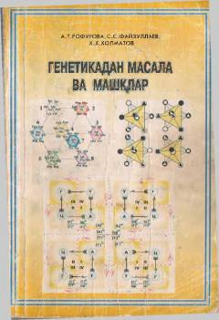

GMGenetika fanidan masalalar yechish usullari va mashqlar to'plami.
Ushbu o‘quv qo‘llanmada molekulyar genetika, mono va polidugaylar, genlarning o‘zaro ta’siri, pleyotropiya, jinsga bog‘liq holda irsiylanish hamda krossingover mavzulari bo‘yicha tuzilgan masalalar va ularni yechish usullari bayon etilgan. Qo‘llanma pedagogika institutlari va o‘rta maktablar o‘quvchilari hamda o‘qituvchilari uchun mo‘ljallangan bo‘lib, tibbiyot va qishloq xo‘jaligi oliy o‘quv yurtlari talabalari ham foydalanishi mumkin.